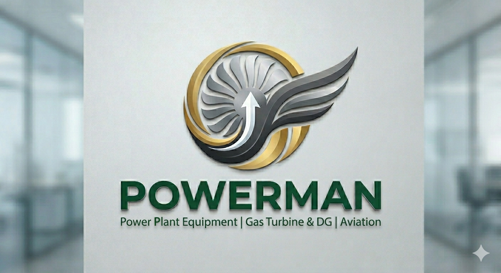
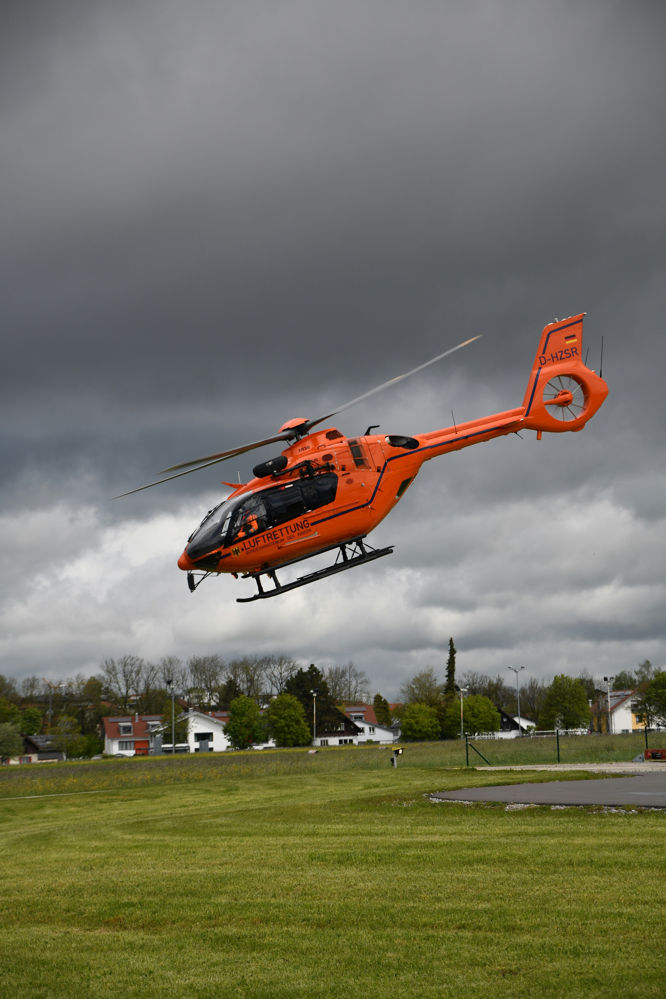
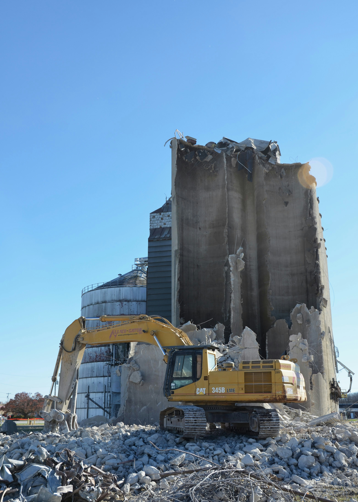

AVIATION CONSULTANCY
WELCOME TO POWERMAN
High-Value Aviation & Infrastructure Advisory
Aircraft brokerage, helicopter advisory, helipad consultancy, MRO strategy, industrial infrastructure, and strategic aviation growth solutions tailored for a dynamic world.
We are a group of highly experienced professionals
who have worked across government agencies,
aviation regulators,
top airlines,
large pilot training institutions,
global business jet operators,
and leading business houses of the country.
POWERMAN is committed to offering
super specialised aviation consultancy services
to government organisations,
aviation stakeholders,
infrastructure developers,
and the wider aviation fraternity across
India and South Asia.
Our team comprises seasoned aviation experts having hands-on experience of 20–30 years across DGCA, AAI Headquarters, Army Aviation, leading airlines, and business jet operations. We also have industry experts with deep expertise in aviation regulation, operations, infrastructure, certification, and strategic aviation implementation.
Specialised expertise in aircraft inspection, regulatory compliance, technical certification, and aviation operational approvals.
Feasibility studies, design consultancy, certification, execution planning, and aviation infrastructure solutions.
Strategic advisory for aircraft acquisitions, business jet operations, helicopter consultancy, leasing, and aviation asset transactions.
Sales, leasing, acquisitions and comprehensive aviation consultancy solutions.
Feasibility studies, design consultancy, rooftop helipads, floating helipads and infrastructure advisory.
Maintenance strategy, MRO advisory, ground handling consultancy and operational excellence.
Gas turbines, DG sets, industrial assets advisory, power plant consultancy and infrastructure solutions.


Anil Kumaar Rai leads POWERMAN with a strategic vision focused on aviation consultancy, aircraft advisory, helicopter infrastructure, industrial projects, power solutions, and high-value infrastructure opportunities.